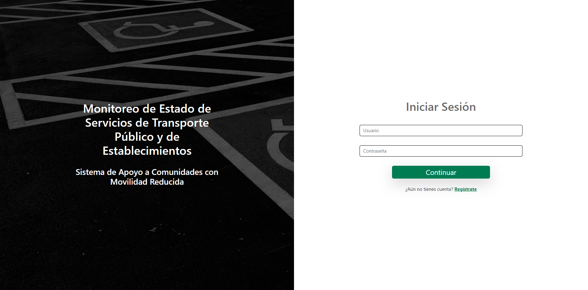
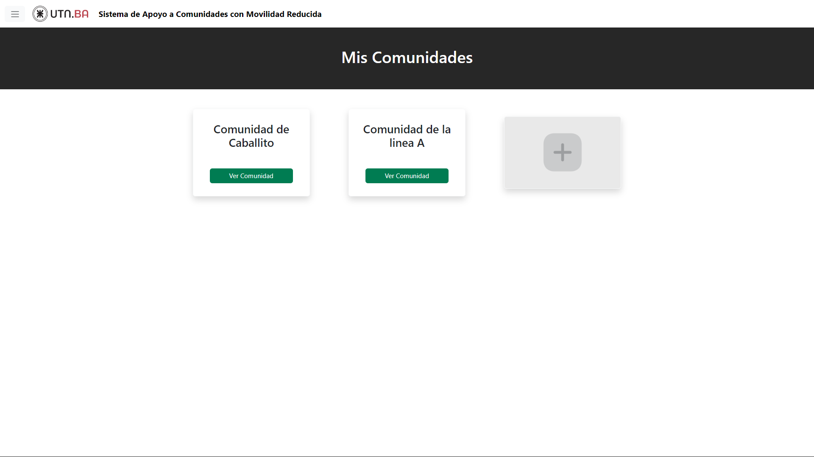
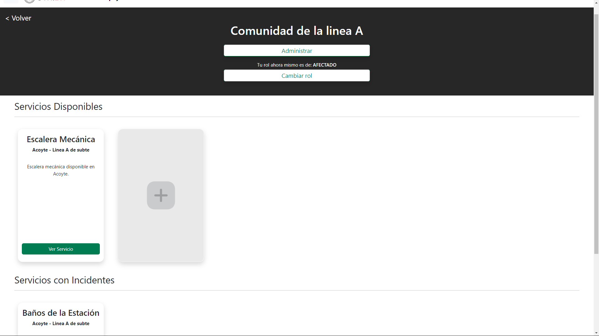
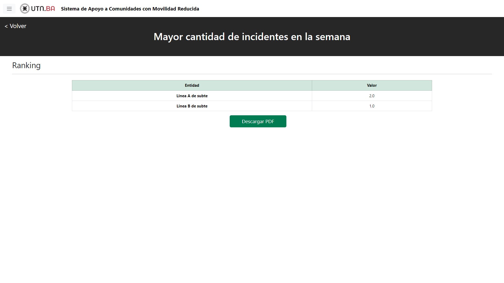

Pantalla de Log In del Sistema.

Pantalla de las Comunidades a las que pertenece el usuario.

Pantalla de Servicios que le interesa a una Comunidad y su estado actual.

Pantalla de Incidentes del Servicio, activos y pasados.

Pantalla de uno de los rankings: Mayor cantidad de incidentes semanales. Estos rankings pueden ser vistos solo por las personas designadas por las Entidades cargadas.

Pantalla de donde los administradores de la plataforma pueden cargar las Entidades y Organismos de Control al Sistema mediante archivos CSV.